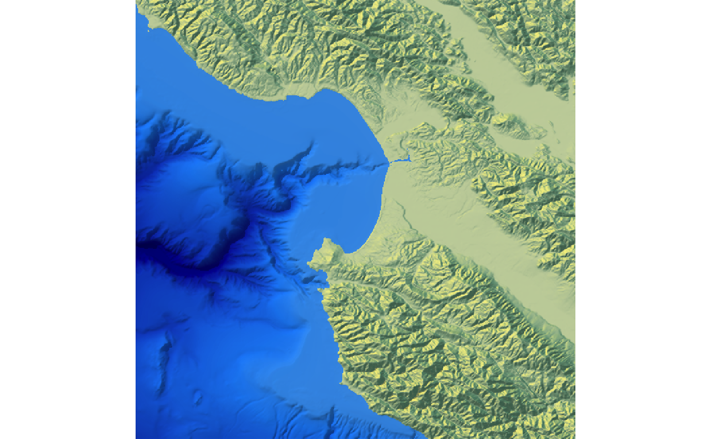
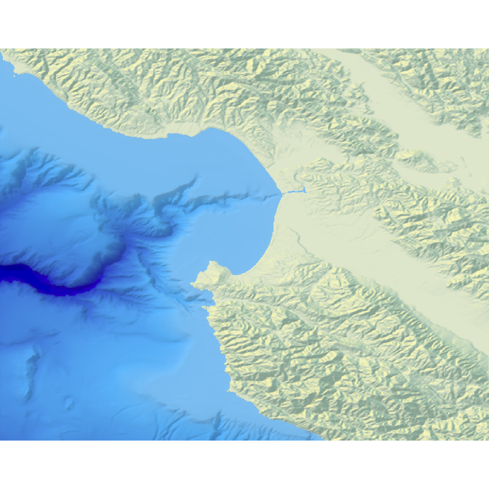

Displays the map in the current device.
plot_map(
hillshade,
rotate = 0,
asp = 1,
title_text = NA,
title_offset = c(20, 20),
title_color = "black",
title_size = 30,
title_font = "sans",
title_style = "normal",
title_bar_color = NA,
title_bar_alpha = 0.5,
title_just = "left",
...
)Hillshade to be plotted.
Default `0`. Rotates the output. Possible values: `0`, `90`, `180`, `270`.
Default `1`. Aspect ratio of the resulting plot. Use `asp = 1/cospi(mean_latitude/180)` to rescale lat/long at higher latitudes to the correct the aspect ratio.
Default `NULL`. Text. Adds a title to the image, using `magick::image_annotate()`.
Default `c(20,20)`. Distance from the top-left (default, `gravity` direction in image_annotate) corner to offset the title.
Default `black`. Font color.
Default `30`. Font size in pixels.
Default `sans`. String with font family such as "sans", "mono", "serif", "Times", "Helvetica", "Trebuchet", "Georgia", "Palatino" or "Comic Sans".
Default `normal`. Font style (e.g. `italic`).
Default `NA`. If a color, this will create a colored bar under the title.
Default `0.5`. Transparency of the title bar.
Default `left`. Justification of the title.
Additional arguments to pass to the `raster::plotRGB` function that displays the map.
#Plotting the Monterey Bay dataset with bathymetry data
if(run_documentation()) {
water_palette = colorRampPalette(c("darkblue", "dodgerblue", "lightblue"))(200)
bathy_hs = height_shade(montereybay, texture = water_palette)
#For compass text
par(family = "Arial")
#Set everything below 0m to water palette
montereybay %>%
sphere_shade(zscale=10) %>%
add_overlay(generate_altitude_overlay(bathy_hs, montereybay, 0, 0)) %>%
add_shadow(ray_shade(montereybay,zscale=50),0.3) %>%
plot_map()
}

#Correcting the aspect ratio for the latitude of Monterey Bay
extent_mb = attr(montereybay,"extent")
mean_latitude = mean(c(extent_mb@ymax,extent_mb@ymin))
if(run_documentation()) {
montereybay %>%
sphere_shade(zscale=10) %>%
add_overlay(generate_altitude_overlay(bathy_hs, montereybay, 0, 0)) %>%
add_shadow(ray_shade(montereybay,zscale=50),0.3) %>%
plot_map(asp = 1/cospi(mean_latitude/180))
}
